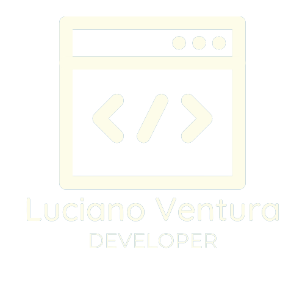

1.
Start
Primeira etapa, aqui temos o
primeiro contato. Nessa
etapa, realizamos o briefing e
a partir disso, monto um
orçamento.

Ajudo empresas e pessoas a darem o primeiro
passo no mundo digital, desenvolvendo a
solução ideal para o que buscam.
Etapa por etapa, processo por processo. Cada
passo é importante no
desenvolvimento de um
projeto
1.
Primeira etapa, aqui temos o
primeiro contato. Nessa
etapa, realizamos o briefing e
a partir disso, monto um
orçamento.
2.
Orçamento aceito, partimos
para a próxima etapa. Aqui eu
começo a realizar pesquisas
e gerar ideias para o visual do
projeto.
3.
Deixando o visual completo e
interativo, após a "finalização"
etapa, realizamos o briefing e
lhe envio para aprovação.
4.
Projeto visual aceito, chegou
a hora de usar a tecnologia
certa para deixar o projeto
pronto para ser hospedado e
acessado.